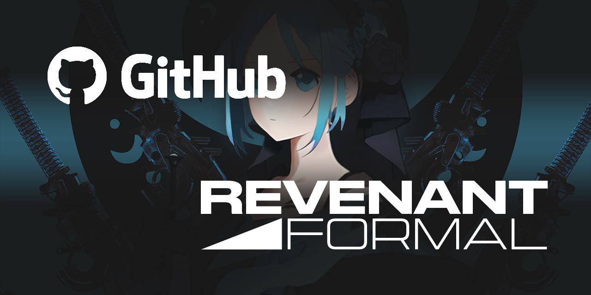

Developer Logs
Ini adalah koleksi log dari pembangun laman web, Disini terdapat semua kemaskini terbaharu didalam
website, produk baharu, karya, model tiga dimensi, dan lain-lain. Semua jenis kemaskini di sini hanya
disenaraikan didalam bentuk laporan.
Disini juga akan dimasukkan sebarang senarai projek baharu yang akan datang masa hadapan.
Kemaskini terakhir 12 Februari, 2023
Permulaan 'Revenant Formal'
Revenant Formal telah mula aktif dikembangkan oleh NMVX
, sekitar tahun 2022 sehingga sekarang. Nemesis Formal ini berasaskan 'Modern fundamental' laman web untuk menampilkan karya seni 2D, 3D berdasarkan "Artstation" dan "Behance".

Sumber kod teras untuk projek Revenant Formal telah dimuatnaik ke Github, dan di'Deployed' menggunakan
"Firebase" berformatkan laman web statik (Static Website).
Kebanyakkan aset didalam laman web ini dibuat semula ke format moden 'WEBP' untuk mengoptimumkan prestasi laman web ini.
💡 Format Moden
WebP ialah format imej moden yang menyediakan pemampatan 'lossless' dan 'lossy' yang unggul untuk imej di web. Menggunakan WebP, juruweb dan pembangun web boleh mencipta imej yang lebih kecil dan kaya yang menjadikan web lebih pantas.